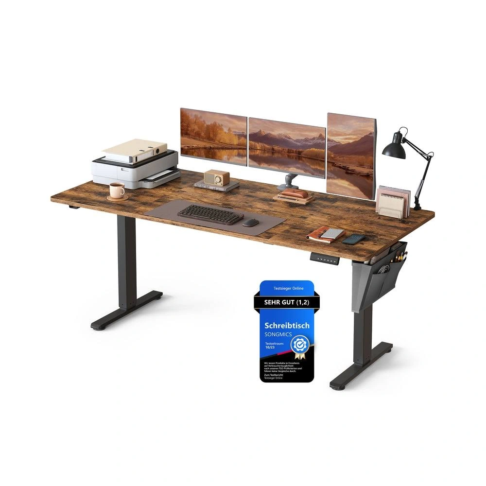
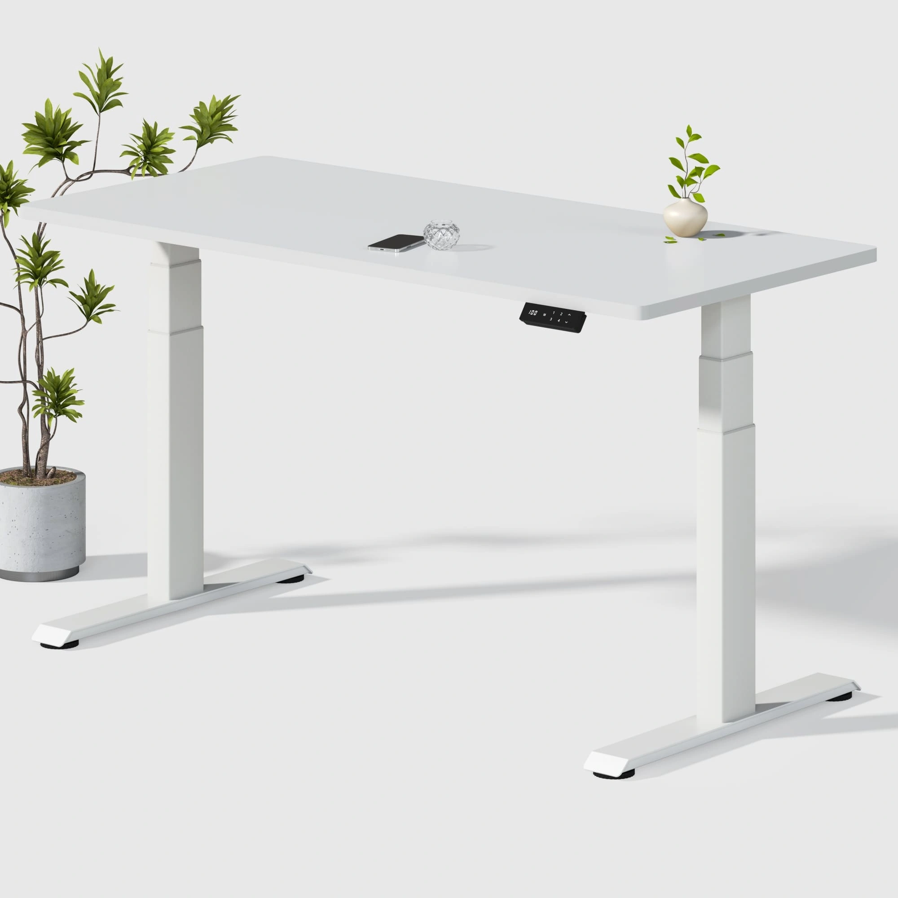
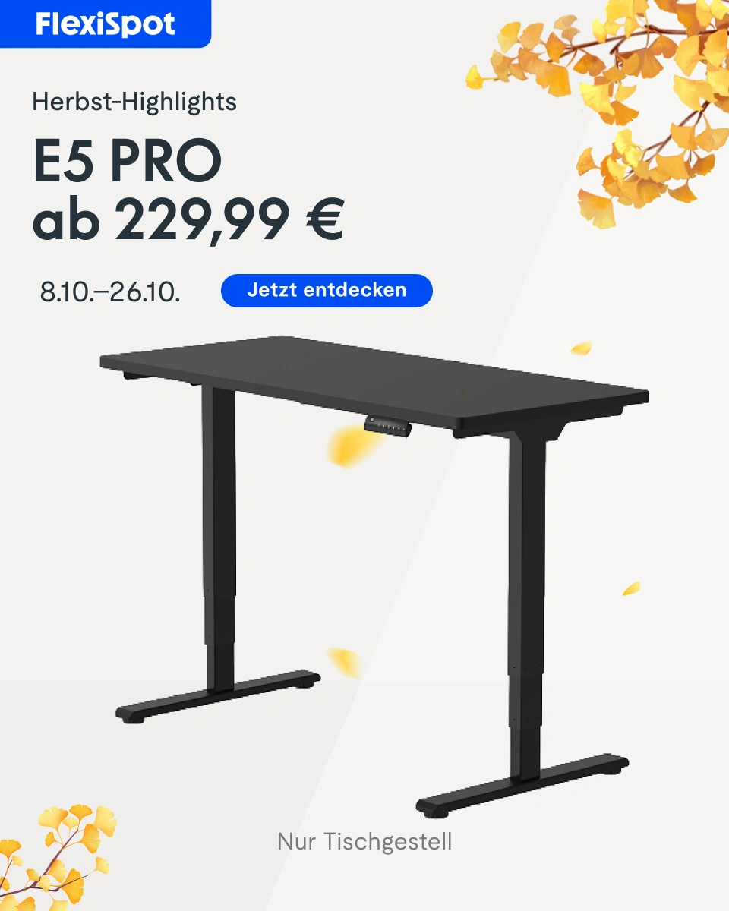
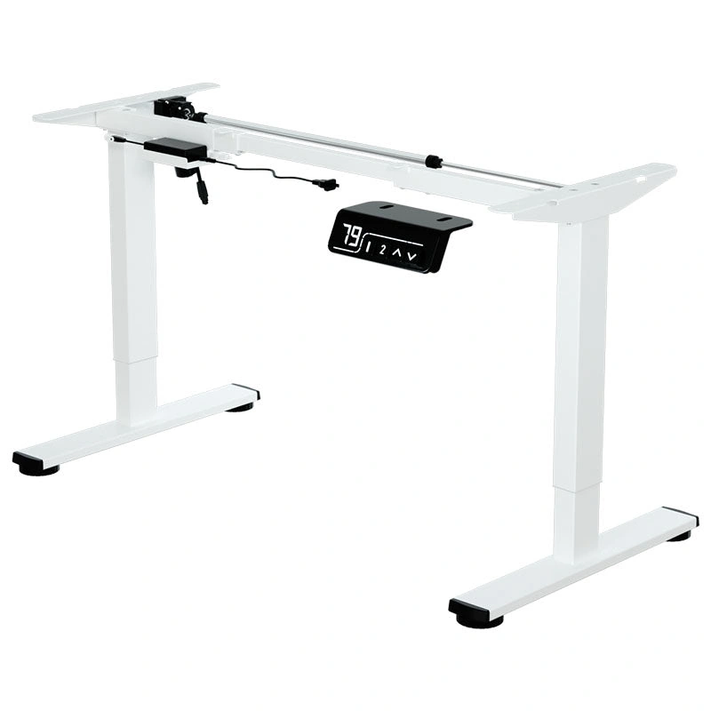
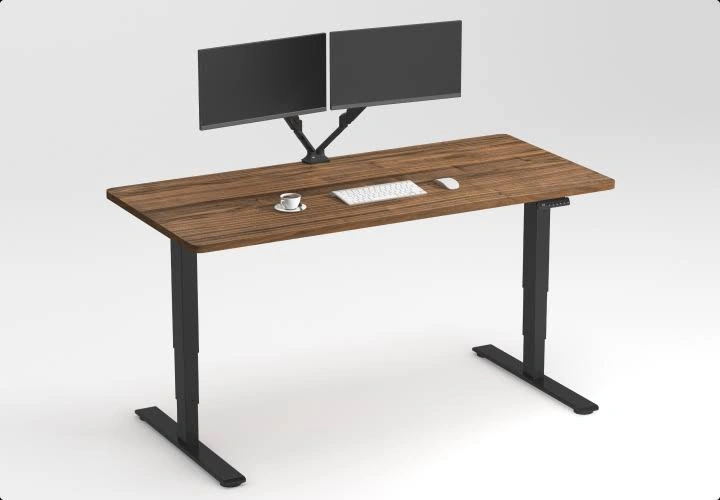
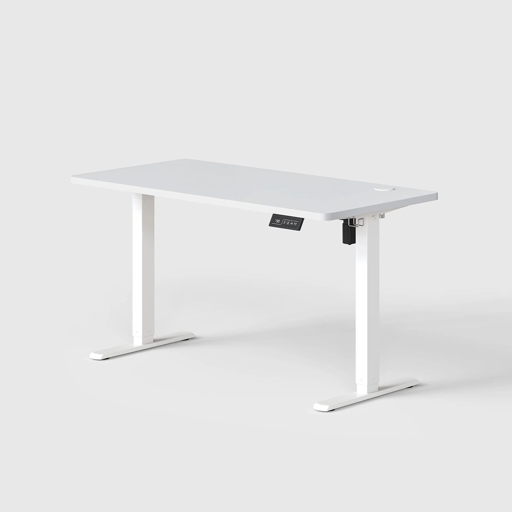
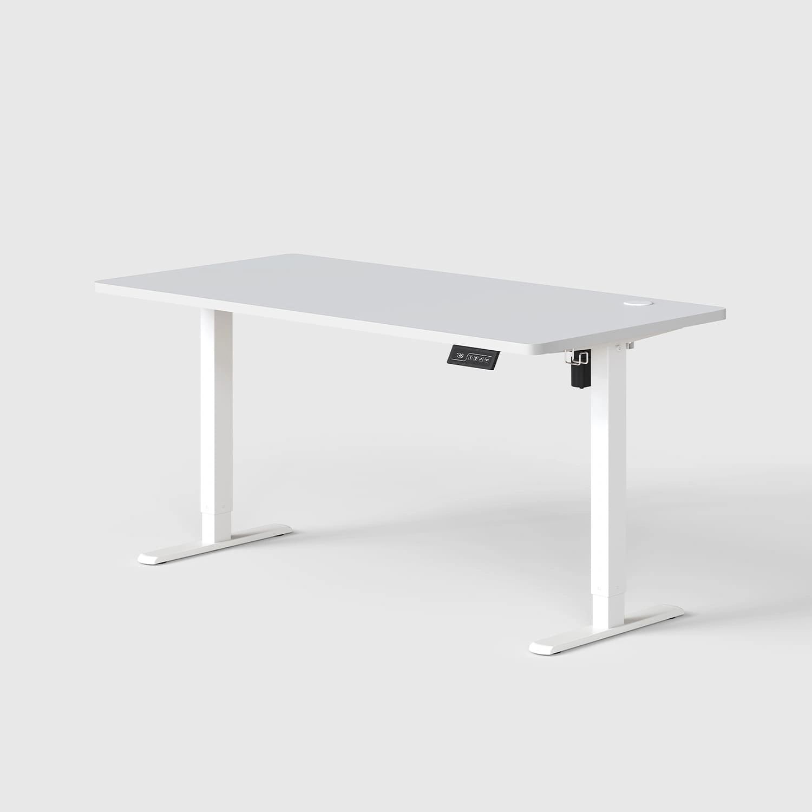
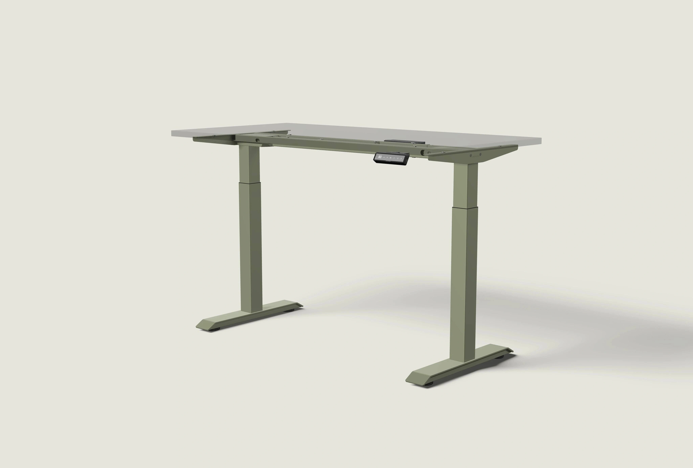
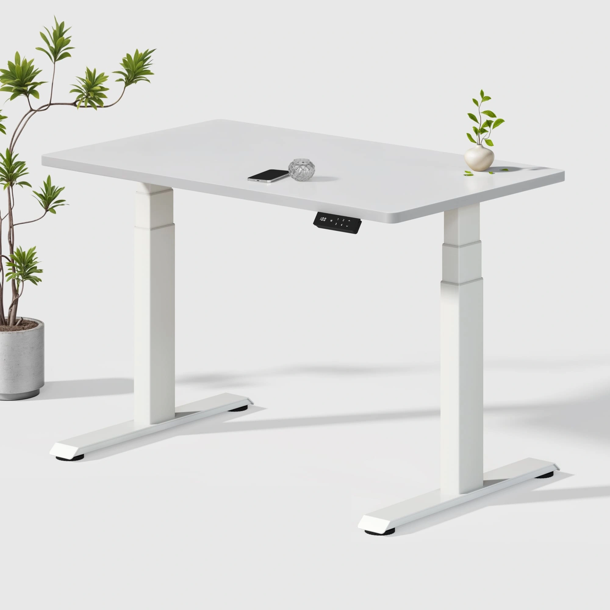
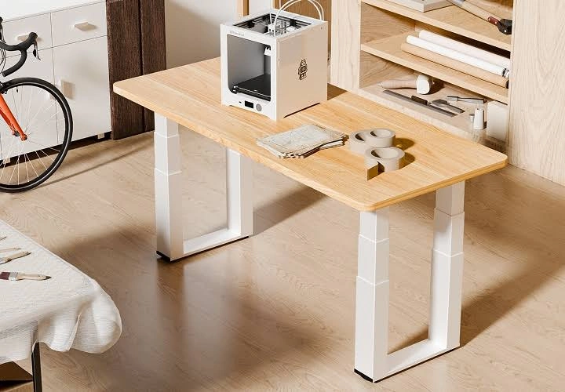

Furniwell Top 10 优先创意
评分是策划判断：产品匹配30、需求25、参考证据20、差异化15、制作10。没有竞品CTR、CVR或ROAS。投放时间和重复次数没有进入评分。以下是制作简报，不是已生成的广告。
1. FW-C11 · 打印、核对、输入，一条桌面流程 · 94/100

SONG-GOOG-027SONG-GOOG-027 · SONGMICS · Google · 真实广告内的图像组件（非完整广告版式）

Furniwell P3对应产品：Dual Ultra X 白色 180×80 cm。
用户与需求：处理合同、订单或纸质资料的个体经营者，纸质文件与电脑工作可以连续完成。
参考什么：参考打印机、双屏和纸张共同提供的尺度与用途证据。
为什么：P3尺寸真实；纸张与电脑混合办公符合实际任务，具体职业购买意向待测。
如何差异化：把打印机放在一端并保留中部写字区，减少屏幕数量，突出工作流而非设备堆叠。
具体场景：暖灰色家庭工作间，墙上是发货日历，地面为浅灰地毯，不出现竞品侧袋。
构图：略高正面宽幅全景，左打印、中央A4核对、右侧屏幕与键鼠；前长边和两只桌脚完整可见。
人物动作：约38岁成年人坐在中部给一份打印件做勾选，右边屏幕显示模糊通用表格。
推荐渠道与比例：Google PMax 图片资产；Meta Feed；1.91:1、4:5。这不是竞品系列归属判断。
德语主题：Platz für deinen ganzen Arbeitsablauf。
优先理由：直接解决选型或用途疑问；产品事实已核验，参考图可追溯。把打印机放在一端并保留中部写字区，减少屏幕数量，突出工作流而非设备堆叠
参考编号：SONG-GOOG-027, FLEX-GOOG-036。
首张参考原广告 · 官方产品。参考日期证据：详情日期与德国地区已核验。
边界：营销段落160 kg载荷与规格区动态120 kg/静态160 kg不同；不做重载数字广告，先复核。
2. FW-C24 · 桌架价格里到底包含什么 · 94/100

FLEX-GOOG-077FLEX-GOOG-077 · FlexiSpot · Google · 完整导出广告画面

Furniwell P4对应产品：Einzelmotor 白色电动升降桌架。
用户与需求：搜索电动桌架、接近下单的用户，清楚知道只购买框架，桌板和设备另配。
参考什么：参考明确“仅桌架”的标签、裸框架及控制器局部。
为什么：Furniwell确实单独销售P4；这是可直接澄清的商品信息。
如何差异化：主图只放白P4，右边小灰色示意图解释如何配合自有合适桌板；不让完整桌子抢走主视觉。
具体场景：无生活背景的白灰信息布景。
构图：左侧约70%给完整桌架，右侧是“Gestell / Tischplatte separat”两项边界及适配检查提示；不加未经核验赠品。渠道改版：PMax版只拍完整裸桌架，不加灰色整桌示意或图中文字；仅桌架、桌板另配写入广告文字。
人物动作：无人；实际控制器和线缆完整保留。
推荐渠道与比例：Meta Feed主方案；Google PMax需另做干净单幅版本；1:1、1.91:1。这不是竞品系列归属判断。
德语主题：Nur das Gestell. Klar erklärt.。
优先理由：直接解决选型或用途疑问；产品事实已核验，参考图可追溯。主图只放白P4，右边小灰色示意图解释如何配合自有合适桌板；不让完整桌子抢走主视觉
参考编号：FLEX-GOOG-077, DESK-GOOG-031, SONG-GOOG-074。
首张参考原广告 · 官方产品。参考日期证据：详情日期与德国地区已核验。
边界：正文还出现不同高度/宽度范围，兼容性按规格区并在制作前复核安装孔位、板材、重量；不可承诺适配任意旧桌板。
3. FW-C02 · 180厘米双屏并行任务台 · 92/100

FLEX-GOOG-036FLEX-GOOG-036 · FlexiSpot · Google · 真实广告内的图像组件（非完整广告版式）
Furniwell P3对应产品：Dual Ultra X 白色 180×80 cm。
用户与需求：经常同时处理多个窗口的远程工作者，双屏、笔记本与资料可以各有位置。
参考什么：参考双屏与不同体积设备提供的容量参照。
为什么：多设备是样本中真实出现的用途；P3尺寸可核验，不能据静帧推断稳定性。
如何差异化：设备分成会议、资料、输入三区，不做竞品的满桌设备复制。
具体场景：深蓝墙的独立书房，桌背后留线缆与升降空间。
构图：从使用者左后上方拍约35°，画面包含双屏、笔记本与右边约一臂的空白资料区；不要让屏幕遮掉前沿控制器。
人物动作：约35岁项目经理站姿在纸质项目表与右屏之间核对，双手自然。
推荐渠道与比例：Google PMax 图片资产；Meta Feed；1.91:1、4:5。这不是竞品系列归属判断。
德语主题：Mehr Platz für parallele Aufgaben。
优先理由：直接解决选型或用途疑问；产品事实已核验，参考图可追溯。设备分成会议、资料、输入三区，不做竞品的满桌设备复制
参考编号：FLEX-GOOG-036, SONG-GOOG-027。
首张参考原广告 · 官方产品。参考日期证据：详情日期与德国地区已核验。
边界：营销段落160 kg载荷与规格区动态120 kg/静态160 kg不同；不做重载数字广告，先复核。
4. FW-C05 · 同一个人的坐站工作节奏 · 92/100
 ERGO-GOOG-043
ERGO-GOOG-043ERGO-GOOG-043 · Ergotopia · Google · 完整导出广告画面

Furniwell P1对应产品：Economy Solid 白色 120×60 cm。
用户与需求：电脑工作时间较长的居家办公者，方便改变工作姿势，不中断同一任务。
参考什么：参考产品与操作解释并置；竞品静帧没有证明转换效果。
为什么：DGUV支持坐、站、移动交替；P1有两组记忆高度。不能承诺治疗疼痛或全天站立更健康。
如何差异化：用同一房间、同一人、同一桌面任务的两个静帧体现真实高度差。
具体场景：浅灰墙小书房，背景有书柜而非窗帘绿植组合。
构图：等宽双联图，左坐右站，机位和桌子透视固定；桌面设备、人物服装、镜像方向一致。渠道改版：PMax版单独使用站姿或坐姿的完整单幅使用画面，不上传双联拼图。
人物动作：约32岁办公者在左图坐着输入、右图站着继续同一任务；前臂自然，视线落在屏幕上。
推荐渠道与比例：Meta Feed主方案；Google PMax需另做干净单幅版本；1:1、1.91:1。这不是竞品系列归属判断。
德语主题：Sitzen. Stehen. Im Wechsel arbeiten.。
优先理由：直接解决选型或用途疑问；产品事实已核验，参考图可追溯。用同一房间、同一人、同一桌面任务的两个静帧体现真实高度差
参考编号：ERGO-GOOG-043, FLEX-GOOG-041。
首张参考原广告 · 官方产品。参考日期证据：详情日期与德国地区已核验。
边界：描述段噪声<50 dB与规格≤55 dB不一致，创意不引用分贝；不要混用Economy拼接板。
5. FW-C06 · 一只手找到自己的常用高度 · 92/100
 ERGO-GOOG-026
ERGO-GOOG-026ERGO-GOOG-026 · Ergotopia · Google · 真实广告内的图像组件（非完整广告版式）

Furniwell P2对应产品：Economy Solid 白色 140×70 cm。
用户与需求：首次购买电动升降桌的用户，看懂日常如何操作，以及面板装在哪一侧。
参考什么：参考整桌加手控器放大图，解释“看哪里、按哪里”。
为什么：公开产品信息确认两组记忆位；操作疑问是购买流程推断，不是用户调研比例。
如何差异化：使用P2真实黑色面板和原键位；整桌放小，操作区放大，避免把大面板贴在桌面上。
具体场景：深灰色背景的小工作角，台面保持少量输入设备。
构图：主画面从使用者右前方近拍，包含桌边、原装控制器、手指；左上放小整桌参考，说明局部位置。渠道改版：PMax版拍完整桌子与操作手势的同一张照片，不加小图或局部拼贴。
人物动作：成年使用者只用一只手轻按已核验的记忆键，手指不遮住全部键位；静态不画运动速度。
推荐渠道与比例：Meta Feed主方案；Google PMax需另做干净单幅版本；1:1、4:5。这不是竞品系列归属判断。
德语主题：Deine Höhe auf Knopfdruck。
优先理由：直接解决选型或用途疑问；产品事实已核验，参考图可追溯。使用P2真实黑色面板和原键位；整桌放小，操作区放大，避免把大面板贴在桌面上
参考编号：ERGO-GOOG-026, SONG-GOOG-074, ERGO-GOOG-066。
首张参考原广告 · 官方产品。参考日期证据：详情日期与德国地区已核验。
边界：页面文案提到100–160 cm，但当前可选变体只核验100/120/140 cm；不把160 cm写成可售Solid。
6. FW-C09 · 120、140还是180，按任务选尺寸 · 92/100
 ERGO-GOOG-002
ERGO-GOOG-002ERGO-GOOG-002 · Ergotopia · Google · 完整导出广告画面
Furniwell P1对应产品：Economy Solid 白色 120×60 cm、Economy Solid 白色 140×70 cm、Dual Ultra X 白色 180×80 cm。
用户与需求：已有购买意向但拿不准尺寸的用户，看懂不同桌面尺寸可以容纳的实际工作内容。
参考什么：参考统一透视的选型矩阵与无遮挡桌面，不复制竞品SKU。
为什么：Furniwell真实变体支持尺寸比较；设备摆放是规划示意，不是适合所有人的标准。
如何差异化：固定比例和机位，分别演示单屏、单屏加资料区、双屏加资料区；不放误导性的同一张桌子缩放标签。
具体场景：中性浅灰棚拍空间，每一格有明确尺寸和型号名称。
构图：三列对照，长边严格按120:140:180比例，深度按60:70:80；面板与立柱按各型号官方图锁定。渠道改版：PMax版按每个尺寸分别拍一张干净单产品画面，不上传三列矩阵；尺寸放广告文字。
人物动作：无人；配件为示意，不暗示包含在商品内。
推荐渠道与比例：Meta Feed主方案；Google PMax需另做干净单幅版本；1.91:1、1:1。这不是竞品系列归属判断。
德语主题：Welche Größe passt zu deinem Arbeitstag?。
优先理由：直接解决选型或用途疑问；产品事实已核验，参考图可追溯。固定比例和机位，分别演示单屏、单屏加资料区、双屏加资料区；不放误导性的同一张桌子缩放标签
参考编号：ERGO-GOOG-002, ERGO-GOOG-052, DESK-GOOG-011。
首张参考原广告 · 官方产品。参考日期证据：详情日期与德国地区已核验。
边界：描述段噪声<50 dB与规格≤55 dB不一致，创意不引用分贝；不要混用Economy拼接板。; 页面文案提到100–160 cm，但当前可选变体只核验100/120/140 cm；不把160 cm写成可售Solid。; 营销段落160 kg载荷与规格区动态120 kg/静态160 kg不同；不做重载数字广告，先复核。
7. FW-C04 · 保留熟悉桌板，升级坐站方式 · 91/100

DESK-GOOG-031DESK-GOOG-031 · Desktronic · Google · 真实广告内的图像组件（非完整广告版式）
Furniwell P4对应产品：Einzelmotor 白色电动升降桌架。
用户与需求：已有合适桌板、不想整桌更换的用户，明确升级路径和安装前需要确认的条件。
参考什么：参考纯桌架和控制器放大，以及“仅桌架”的商品边界提示。
为什么：Furniwell明确销售独立桌架；保留已有桌板的需求有产品用途支持，需求规模未知。
如何差异化：旧桌板的使用痕迹保留；用安装前检查卡解释宽深、板材、重量与孔位。
具体场景：明亮的家庭工作间，地上有软垫和按原说明摆放的工具。
构图：左边为经过检查的旧桌板，右边为白色P4，底部小图示意安装后成桌；三幅示意明确桌板不含在售桌架中。渠道改版：PMax版使用一张清晰裸桌架照片，不拼接安装三步；适配条件放广告文字与落地页。
人物动作：约40岁成年人拿卷尺测桌板，桌板放在稳固支撑上；不表演危险倒置或无支撑安装。
推荐渠道与比例：Meta Feed主方案；Google PMax需另做干净单幅版本；1.91:1、1:1。这不是竞品系列归属判断。
德语主题：Deine passende Tischplatte. Ein neues Gestell.。
优先理由：直接解决选型或用途疑问；产品事实已核验，参考图可追溯。旧桌板的使用痕迹保留；用安装前检查卡解释宽深、板材、重量与孔位
参考编号：DESK-GOOG-031, SONG-GOOG-074, FLEX-GOOG-077。
首张参考原广告 · 官方产品。参考日期证据：详情日期与德国地区已核验。
边界：正文还出现不同高度/宽度范围，兼容性按规格区并在制作前复核安装孔位、板材、重量；不可承诺适配任意旧桌板。
8. FW-C07 · 深色空间里的白色桌子 · 91/100
 FLEX-GOOG-067
FLEX-GOOG-067FLEX-GOOG-067 · FlexiSpot · Google · 真实广告内的图像组件（非完整广告版式）

Furniwell P6对应产品：Dual Ultra X 白色 140×70 cm。
用户与需求：重视白色家具外观但不喜欢全米色家居的用户，看清白色桌体在另一种装修风格中的样子。
参考什么：参考深背景的轮廓反差与定向光，不复制品质认证或承重宣称。
为什么：P6白色在售，外观需求是产品选型推断；不声称审美偏好覆盖整个德国市场。
如何差异化：以靛蓝墙和银色工作灯替代竞品木墙，减少暖木元素；白桌完整露出。
具体场景：城市公寓的深蓝工作间，侧边金属书架，墙面有一幅单色版画。
构图：低于桌面的前方三分之四全景，桌子约占画面60%；顶部左侧留小标题区，控制器无遮挡。
人物动作：无人；一台显示器、银色灯、一本合上的灰色笔记本。
推荐渠道与比例：Meta Feed；Google PMax 图片资产；4:5、1:1。这不是竞品系列归属判断。
德语主题：Weiß, das in dein Setup passt。
优先理由：直接解决选型或用途疑问；产品事实已核验，参考图可追溯。以靛蓝墙和银色工作灯替代竞品木墙，减少暖木元素；白桌完整露出
参考编号：FLEX-GOOG-067, ERGO-META-2477194332778401。
首张参考原广告 · 官方产品。参考日期证据：详情日期与德国地区已核验。
边界：同P3的动态/静态承重冲突；不要沿用旧记忆中的承重数字。
9. FW-C21 · 站着开会，桌面任务接着做 · 91/100
 YAAS-GOOG-016
YAAS-GOOG-016YAAS-GOOG-016 · Yaasa · Google · 完整导出广告画面
Furniwell P2对应产品：Economy Solid 白色 140×70 cm。
用户与需求：经常视频会议的混合办公者，会议时可以换成站姿，电脑和资料不必另找地方。
参考什么：参考人物与办公任务的关联，再用局部控制器说明如何切换。
为什么：N1+N2支持混合办公和姿势交替；P2支持功能，不承诺会议效率提升。
如何差异化：只有一个人、一个屏幕、少量会议笔记；用侧面显示站姿而不是让人对镜头摆拍。
具体场景：带深红色书架的家庭书房，背景没有可识别品牌或公司信息。
构图：侧向35°中景，人物位于左侧、白桌延伸到右；电脑视频画面不显示真实姓名。
人物动作：约35岁职员站姿听会议，单手在笔记本上记一句话，另一手自然放松。
推荐渠道与比例：Meta Feed；Google PMax 图片资产；4:5、1.91:1。这不是竞品系列归属判断。
德语主题：Auch im Meeting die Position wechseln。
优先理由：直接解决选型或用途疑问；产品事实已核验，参考图可追溯。只有一个人、一个屏幕、少量会议笔记；用侧面显示站姿而不是让人对镜头摆拍
参考编号：YAAS-GOOG-016, ERGO-GOOG-043, ERGO-GOOG-026。
首张参考原广告 · 官方产品。参考日期证据：德国日期筛选列表已核验；单条首次/最后日期未读取。
边界：页面文案提到100–160 cm，但当前可选变体只核验100/120/140 cm；不把160 cm写成可售Solid。
10. FW-C01 · 120厘米也有独立工作区 · 90/100

FLEX-GOOG-012FLEX-GOOG-012 · FlexiSpot · Google · 真实广告内的图像组件（非完整广告版式）
Furniwell P1对应产品：Economy Solid 白色 120×60 cm。
用户与需求：住小户型的混合办公者，不占满卧室，也能保留电脑工作和起身空间。
参考什么：借鉴床与桌同时入镜的空间关系，而非复刻床品或四脚结构。
为什么：小空间需求由小尺寸在售产品支持；德国居家办公有明确统计背景，具体房型是测试假设。
如何差异化：使用白色两脚实物；让门框与通道提供尺度，画面不以绿植作为主装饰。
具体场景：约9平方米的卧室边缘，桌子靠短墙；门开启后仍有现实通路，床与衣柜不挡升降范围。
构图：从门口斜向拍摄，桌占右侧约一半，左侧保留完整通道；加一张小平面示意只标120×60。渠道改版：PMax版只保留真实房间单幅画面，移除小平面图；尺寸信息放广告文字。
人物动作：约30岁远程职员坐姿整理一页任务清单；椅子和膝部空间可见。
推荐渠道与比例：Meta Feed主方案；Google PMax需另做干净单幅版本；4:5、1:1；另构图适配1.91:1。这不是竞品系列归属判断。
德语主题：Dein Arbeitsplatz auf 120 × 60 cm。
优先理由：直接解决选型或用途疑问；产品事实已核验，参考图可追溯。使用白色两脚实物；让门框与通道提供尺度，画面不以绿植作为主装饰
参考编号：FLEX-GOOG-012, FLEX-GOOG-096。
首张参考原广告 · 官方产品。参考日期证据：详情日期与德国地区已核验。
边界：描述段噪声<50 dB与规格≤55 dB不一致，创意不引用分贝；不要混用Economy拼接板。